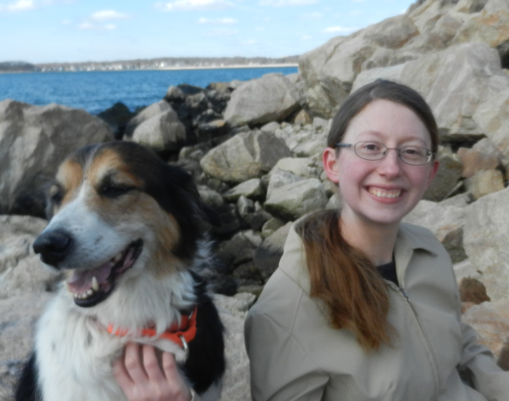

Amy Givler's GitHub Page
Amy GivlerDepartment of Mathematical Sciences 424 Amos Eaton Hall 110 8th Street Troy, NY 12180 E-mail: givlea@rpi.edu |
 |
I am a graduate student in the Department of Mathematical Sciences at Rensselaer Polytechnic Institute. My advisor is Prof. John Mitchell. My current research focus is stochastic optimization of disaster relief planning and operations. I have a M.S. (2010) and a B.S. (2008) in mathematics from Virginia Tech as well as minors in statistics and classical languages.